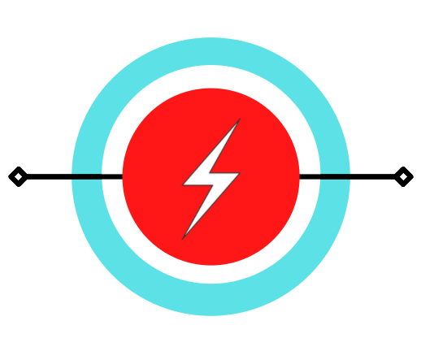

<nav class="navbar" role="navigation" aria-label="main navigation" *ngIf="!loginActivePage">
  <div class="navbar-brand">
    <a class="navbar-item" href=#>
      
    </a>
  </div>
  <div id="navbarBasicExample" class="navbar-menu">
    <div class="navbar-start">
      <a class="navbar-item" routerLink = "/home">
        Home
      </a>
      <div class="navbar-item has-dropdown is-hoverable">
        <a class="navbar-link">
          More
        </a>

        <div class="navbar-dropdown" >
            <ul *ngFor = "let link of links">
              <a class="navbar-item" routerLink="{{ link.route }}">{{link.name}}</a>
            </ul>
        </div>
      </div>
    </div>

    <div class="navbar-end">
      <div class="navbar-item">
        <div class="dropdown is-hoverable">
          <div class="dropdown-trigger">
            <button class="button is-primary" aria-haspopup="true" aria-controls="dropdown-menu"
            (click) ="toggleDropdownValue()">
              <strong>Administracija</strong>
              <span class="icon is-small">
                <i class="fas fa-angle-down" aria-hidden="true"></i>
              </span>
            </button>
          </div>
          <div class="dropdown-menu" id="dropdown-menu" role="menu">
            <div class="dropdown-content">
              <a routerLink = "/admin">O korisnicima i rolama</a>
            </div>
          </div>
        </div>
      </div>
    </div>
  </div>
</nav>
